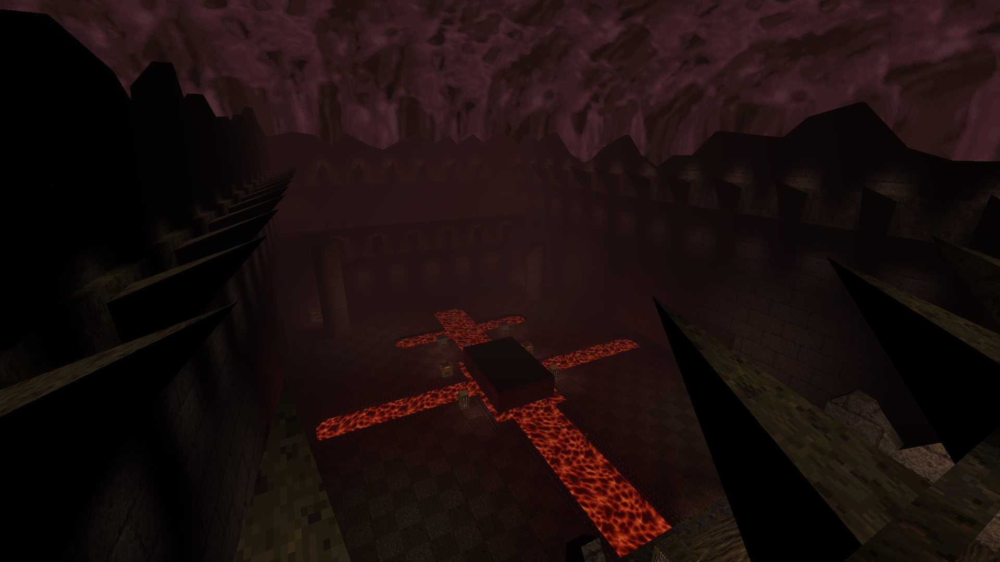

The Garden of Earthly Horrors
My First Quake map. Very eclectic, using all the different texture sets available for Quake. Not as twisty as I'd like nor is its brushwork anything to write home about. But I was happy for a first go!Download
